Die besten 12!
Endrunde: Wählen Sie den Gewinner des Blockgrafik-Wettbewerbes.
Endlich ist es soweit! Unter all den vielen Einsendungen, die uns teilweise an den Bildschirm fesselten, ist es uns nun doch noch gelungen, eine Vorauswahl zu treffen. Manchmal konnten wir es fast nicht glauben, daß wirklich alle Einsendungen nur auf den Blockgrafik-Zeichensatz aufbauten. Die endgültige Entscheidung jedoch sollen Sie treffen. Als Belohnung für Ihre Mühe verlosen wir unter den Einsendern ein Jahresabonnement.
Teilnahmebedingungen:
Unter den zwölf auf dieser Seite abgebildeten Blockgrafiken wählen Sie bitte diejenige aus, die Ihnen vom optischen Eindruck her am besten gefällt. Schreiben Sie die Nummer des Bildes auf eine Postkarte (bitte keine Briefe) und schicken Sie diese bis zum 31. März (Datum des Poststempels) an folgende Adresse:
Markt & Technik Verlag AG
Hans-Pinsel-Str. 2
Redaktion 64’er
Stichwort: Blockgrafikauflösung
8013 Haar bei München
Einsendeschluß ist der 31. März 1986.
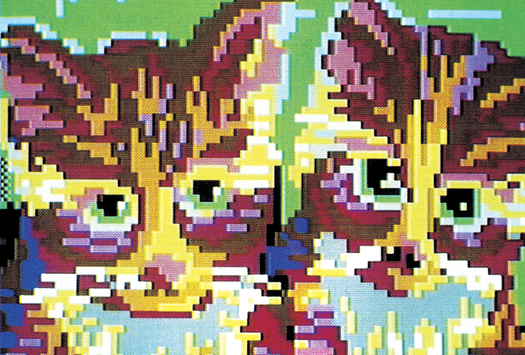
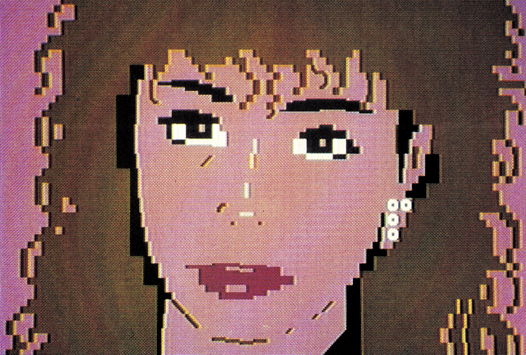
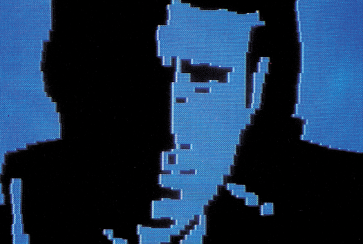
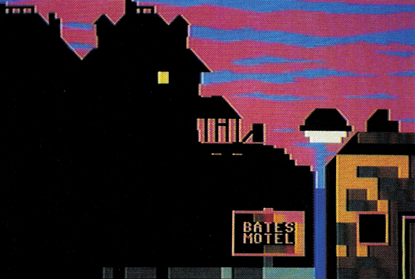
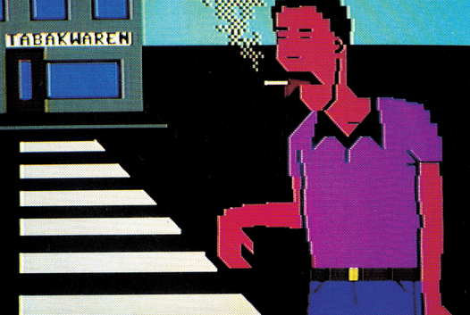
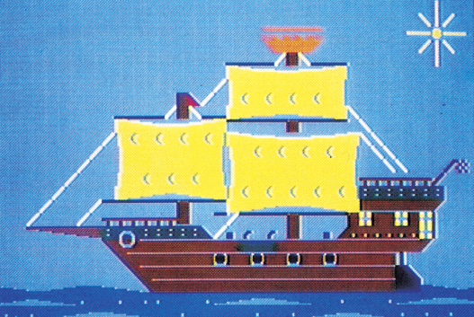
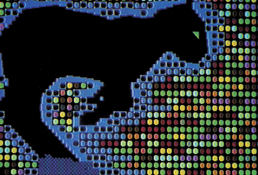
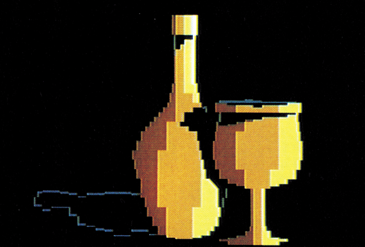
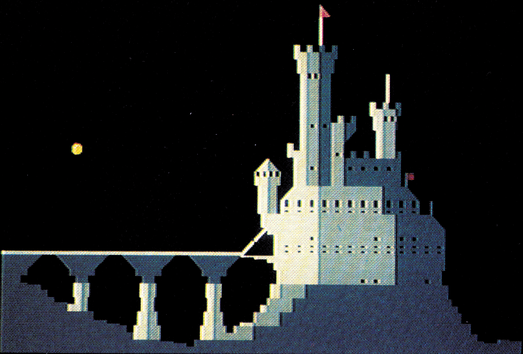
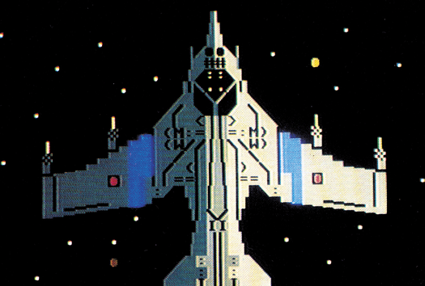
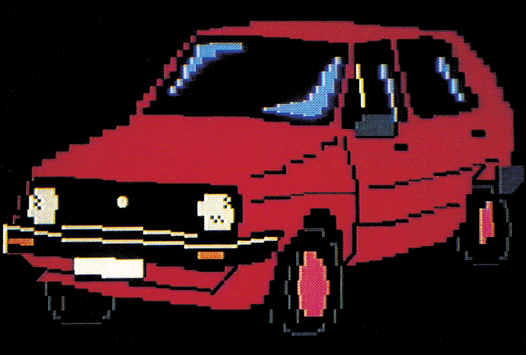
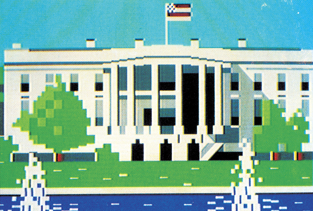